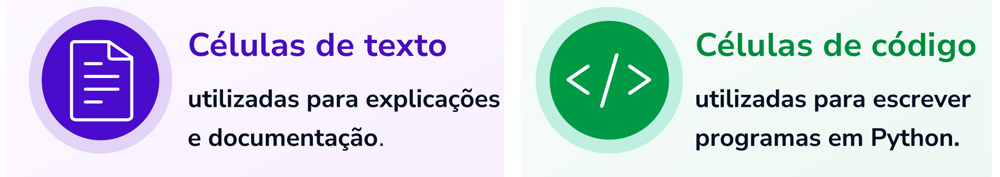
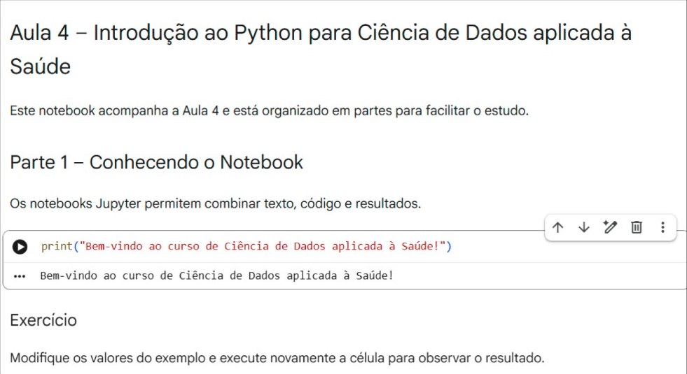
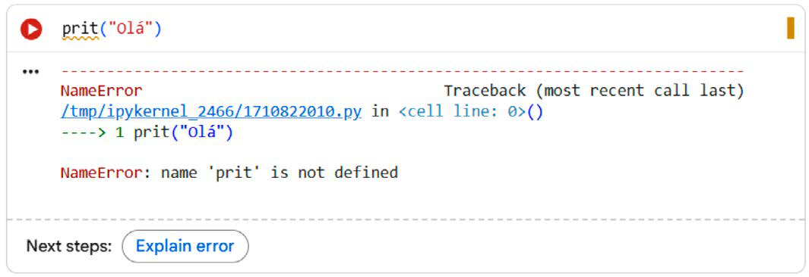
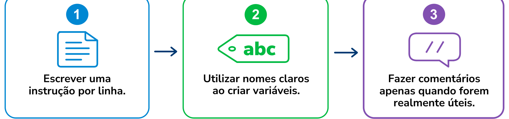

Módulo 2 | Aula 1
Introdução ao Python para Análise de Dados em Saúde
Escrevendo os primeiros programas em Python
Até aqui, discutimos a importância da programação para a Ciência de Dados e conhecemos o ambiente que será utilizado ao longo do curso: o Google Colab. Chegou a hora de escrever seu primeiro programa em Python! Mas, antes disso, que tal conhecer melhor o Colab e alguns dos principais elementos dessa plataforma?
O Colab organiza o trabalho em notebooks, documentos que reúnem textos, imagens e programas em um único arquivo. Cada notebook é composto por células, que podem ser de dois tipos:

Essa organização torna o notebook uma excelente ferramenta para ensino, pesquisa e análise de dados, pois permite registrar tanto o código quanto a interpretação dos resultados obtidos.
Sempre que receber um notebook do curso, faça uma cópia para o seu Google Drive antes de começar a editar o arquivo. Assim, você preservará a versão original disponibilizada.
Executando um programa
Depois de escrever um programa em uma célula de código, basta clicar no botão Executar (▶) ou utilizar o atalho Shift + Enter. O Python interpreta as instruções escritas naquela célula e apresenta imediatamente o resultado; veja a imagem a seguir.
print("Bem-vindo ao curso de Ciência de Dados aplicada à Saúde!")Resultado esperado:
Bem-vindo ao curso de Ciência de Dados aplicada à Saúde!Interface do Google Colab

Um detalhe importante é que o computador executa exatamente o código fornecido: não interpreta intenções, apenas segue as instruções fornecidas.
Como essa característica do computador, de executar exatamente o que foi solicitado, contribui para que uma análise científica possa ser reproduzida da mesma forma por diferentes pesquisadores?
A função print()
A função print() é uma das mais simples e mais utilizadas em Python: sua finalidade é apresentar informações na tela, sejam textos ou números.
print("Base de dados carregada.")
print('Município selecionado: Lavras')
print(528)Resultado:
Base de dados carregada.
Município selecionado: Lavras
528Perceba que textos aparecem entre aspas, que podem ser simples (') ou duplas ("), enquanto números podem ser escritos diretamente, sem aspas. Tudo o que estiver entre aspas será interpretado pelo Python como texto. Já valores sem aspas podem ser interpretados de acordo com seu tipo de dado, como números, variáveis ou expressões matemáticas. Essa diferença será importante quando estudarmos os tipos de dados.
Comentários no código
Nem tudo o que escrevemos em um programa precisa ser executado pelo computador. Em muitos casos é conveniente incluir observações destinadas ao próprio programador ou a outras pessoas que utilizarão o código futuramente. E esta é a função dos comentários, criados com o caractere #.
# Programa utilizado para iniciar a análise da base
print("Análise iniciada.")Ao executar esse programa, apenas a segunda linha produz resultado: o comentário é ignorado pelo Python.
Utilize comentários para explicar por que determinada solução foi adotada, e não apenas para descrever aquilo que já está evidente no código.
Erros fazem parte da programação
Mesmo para programadores experientes, é muito comum cometer pequenos erros durante o desenvolvimento de programas. Quando o Python recebe algum comando ou valor incompatível com o padrão esperado, ele interrompe a execução e apresenta uma mensagem de erro.
prit("Olá")Exemplo de mensagem de erro no Python

Nesse caso, o nome da função foi escrito incorretamente (prit em vez de print), e o Python informará que a função utilizada não existe. As mensagens de erro podem parecer difíceis no início, mas com a prática tornam-se importantes aliadas na identificação de problemas.
Realizando cálculos utilizando Python
Além de executar programas, Python também permite realizar cálculos, que serão utilizados com frequência na produção de indicadores em saúde.
print(125 + 48)
print(540 - 112)
print(18 * 25)
print(240 / 8)Resultado (na ordem):
173
428
450
30.0Reparou que cada Operador matemático tem uma função específica? Confira:
| Operador | Operação |
|---|---|
| + | Adição |
| - | Subtração |
| * | Multiplicação |
| / | Divisão |
Um exemplo relacionado à Saúde
Imagine que determinado município tenha registrado 528 óbitos em um ano, dos quais 312 foram de pessoas do sexo feminino. Podemos utilizar Python para calcular rapidamente a porcentagem correspondente.
312 / 528 * 100Resultado:
59.09Isso significa que aproximadamente 59,1% dos registros correspondem ao sexo feminino. Embora esse cálculo seja simples, o mesmo procedimento poderá ser aplicado a bases com milhões de registros, permitindo realizar análises de forma rápida e consistente.
Boas práticas desde o primeiro programa
Mesmo em programas simples, é importante manter o código organizado. Desde o início, adote algumas boas práticas:

Neste tópico, você escreveu seus primeiros programas em Python e observou que a linguagem também pode ser utilizada para realizar cálculos simples. A seguir, você estudará um dos conceitos mais importantes da programação: as variáveis.